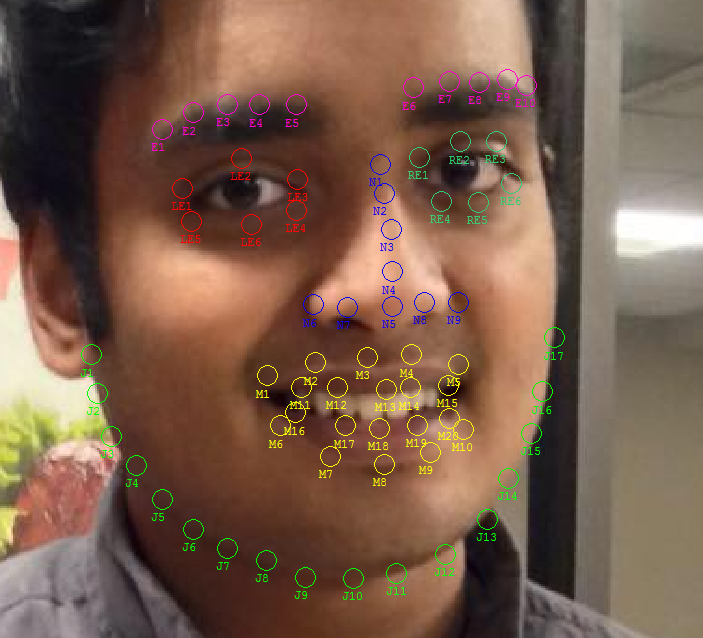
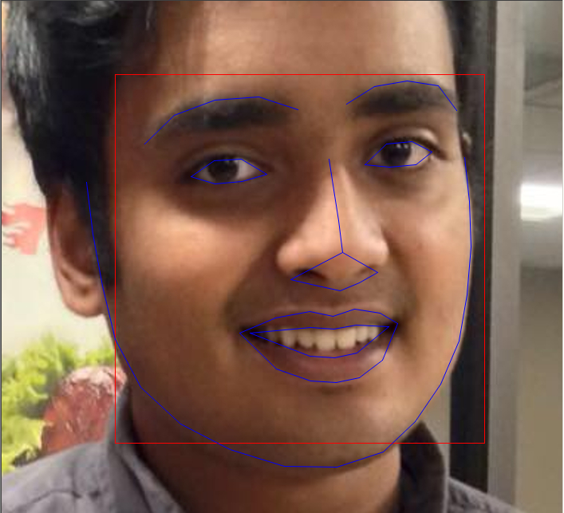
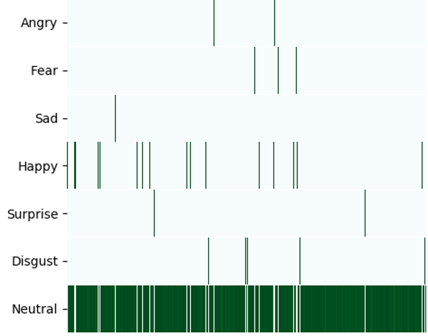

FaceMapper
The FaceMapper annotation tool is used for annotating
faces with landmarks to be used in training facial
landmark recognition algorithms.
It includes a script to transform the output into input used by Dlib. The tool is part of a larger
project
involving the creation of a pipeline
to combine information from naturalistic ECoG and AV recordings to establish correlations between facial
pose,
speech, and brainwave data.
Step 1
Procure novel training data
Step 2
Use FaceMapper to perform annotation. Results can be used to train an object detection
program such as Dlib.

Step 3
Perform recognition tasks on new data

Step 4
Visualize and analyze conglomerate data

Download or clone the project on GitHub!
FaceMapper - Face annotation tool for neural network training
Scripts and a GUI for using OpenFace for landmark and emotion recognition